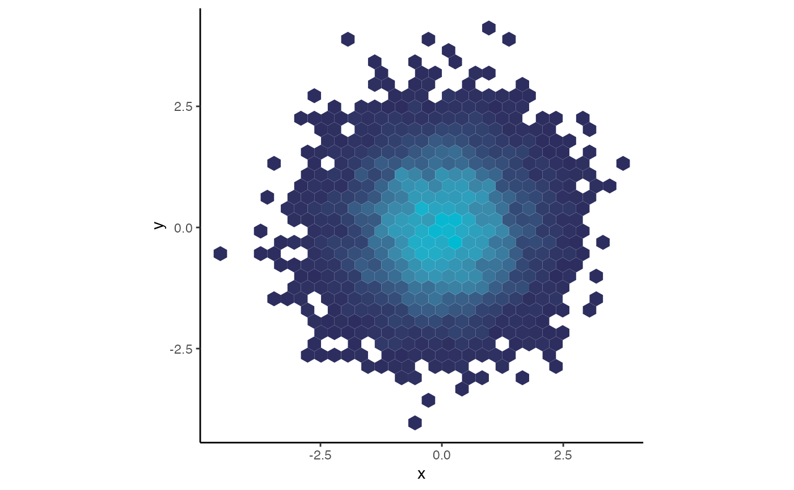
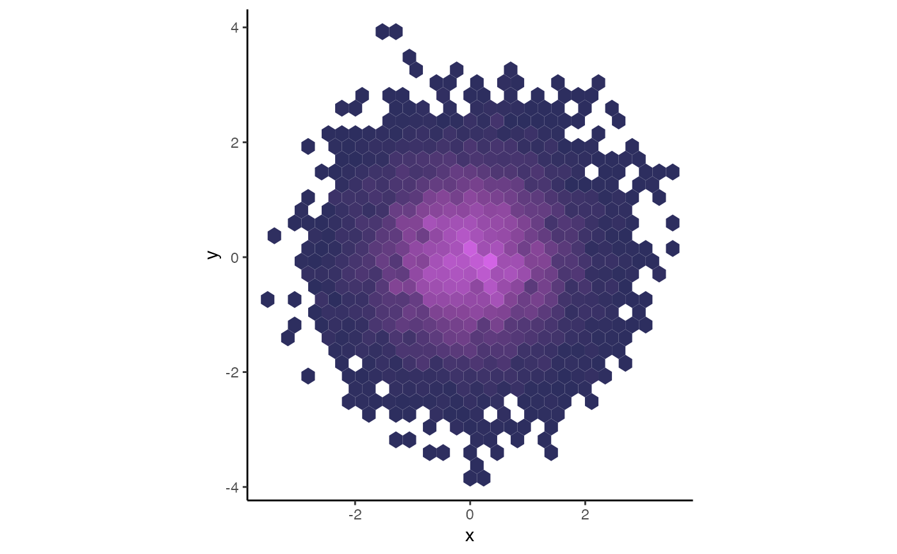

UKRI Blues Fill Scales (Continuous)
Usage
scale_fill_ukri_c(
...,
low = ukri_dark_blue(),
mid = ukri_mid_blue(),
high = ukri_light_blue(),
midpoint = NULL,
space = "Lab",
na.value = cruk_grey(),
guide = "colourbar",
aesthetics = "fill"
)Arguments
- ...
Arguments passed to
ggplot2::scale_colour_gradientorggplot2::scale_colour_gradient2.- low
Colour for the low end of the gradient.
- mid
Colour for the midpoint of the gradient.
- high
Colour for the high end of the gradient.
- midpoint
The midpoint (in data value) of the diverging scale. Diverging scale only used if the midpoint is not equal to
NULL, which is the default.- space
Colour space in which to calculate the gradient.
- na.value
Colour to be used for missing values.
- guide
Type of legend.
- aesthetics
The aesthetic to apply this scale to.
Examples
library(ggplot2)
ggplot(
data.frame(
x = rnorm(10000),
y = rnorm(10000)
)
) +
aes(x = x, y = y) +
geom_hex() + theme_classic() +
guides(fill = "none") + coord_equal() +
scale_fill_ukri_c()

ggplot(
data.frame(
x = rnorm(10000),
y = rnorm(10000)
)
) +
aes(x = x, y = y) +
geom_hex() + theme_classic() +
guides(fill = "none") + coord_equal() +
scale_fill_ukri_c(midpoint = 40)
